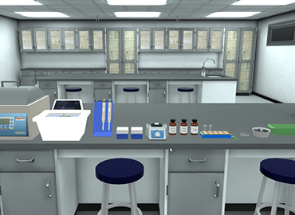
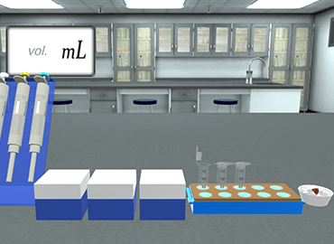
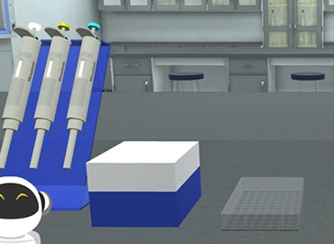
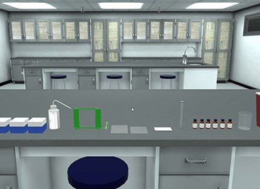
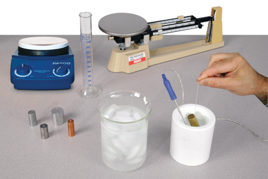
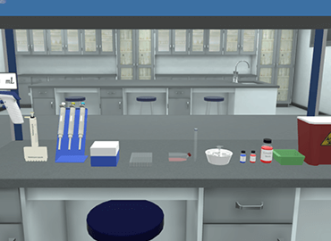
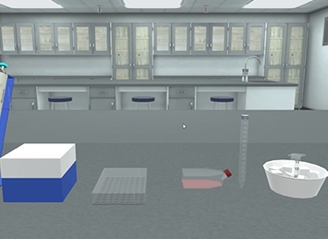
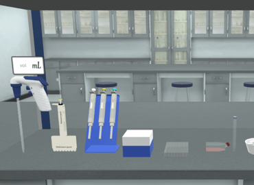
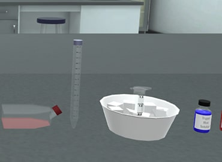

Home
Virtual Labs
Blog
Support
Choose your
favourite topic and
enjoy learning
Biology
Chemistry
Production of Monoclonal Antibodies (mAB) – Hybridomas Technique
Flow Cytometry – Cell Cycle
ELISA – Sandwich
EliSPOT Assay (Dot ELISA)
Immunofluorescence Assaya
Test for Sulphite Radical

Test for Carbonate Radical

Test for Bicarbonate Radical

Test for Bromide Radical

Test for Iodide Radical
Physics

Specific Heat of Solids

Boyle's Law of Gases

Determination of the Coefficient of Viscosity by Using Stokes's Method

Young's Modulus for a Metallic Rod

Archimedes Principle